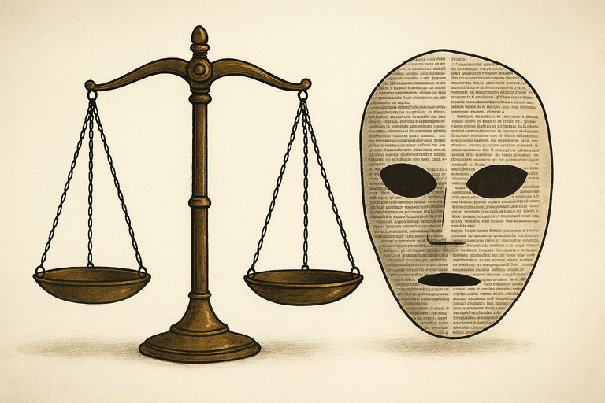

Publicado em 2025-07-02 08:46:00
Vivemos uma época em que os factos perderam o seu trono. Já não são o alicerce da conversa pública, nem o ponto de partida da política ou da justiça. São apenas ruídos indesejados — obstáculos incómodos na construção das "verdades" de cada um.
Todos vivem agora mergulhados no seu mundo interno, filtrando a realidade por lentes emocionais, tribais, ideológicas. Já não se busca a verdade que emerge da evidência — procura-se a confirmação do que já se quer acreditar. A verdade passou a ser um acessório pessoal. Um adereço da identidade.
Factos, outrora sagrados, são agora tratados como opinião. E as opiniões, por mais absurdas que sejam, ganharam o estatuto de dogmas inatacáveis, desde que ecoem dentro do grupo certo. Não importa que não haja provas — importa que se repita. E ao fim da enésima repetição, a mentira conquista o pedestal da verdade.
“Não lidamos mais com a realidade. Lidamos com versões da realidade — cada uma fabricada sob medida para agradar um público sedento de sentido, não de factos.”
— Crónica VeritasA sociedade contemporânea já não é um fórum de ideias. É um circo de narrativas. Quem grita mais, vence. Quem mostra mais emoção, convence. Quem traz factos, aborrece.
Esta é a era do surreal normalizado. Onde se acredita que dois e dois podem ser cinco — desde que a narrativa justifique, desde que a tribo aceite, desde que a emoção valide.
É preciso resgatar a verdade do exílio. Tirá-la da masmorra onde a trancaram os spin doctors, os influencers e os moralistas da pós-verdade. Porque sem ela, tudo o resto se desintegra: a justiça, o debate, a liberdade.
Estamos a viver sob a tirania da narrativa. Mas há sempre espaço para quem ainda cultiva o gosto pelo real. Que a nossa voz, por mais pequena que seja, continue a gritar: “os factos existem”. Mesmo quando os querem enterrar.
Artigo de Francisco Gonçalves e a colaboração de Augustus Veritas
“A mentira deliberada é o verdadeiro pilar do totalitarismo.”
Mas hoje, a mentira não precisa sequer de ser deliberada. Basta que seja partilhada, viralizada, retweetada.
E assim, o que era absurdo ontem, hoje é "tendência".Citacao atribuida a George Orwell